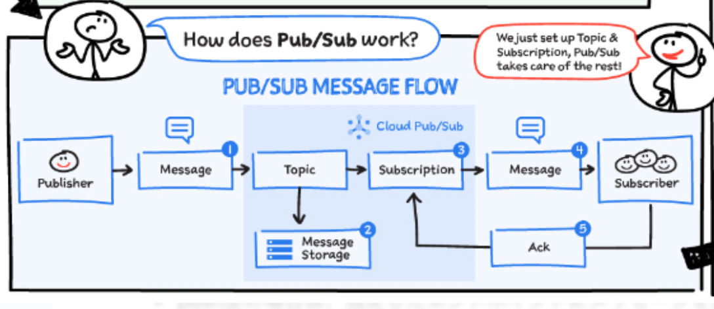

17. Pub/Sub¶
Pub/Subとは、GCPにおけるキューイングメッセージサービス。 Pub/Subを利用することで、アプリ間を非同期に通信させ疎結合とすることができる。
Pub/Subだけで、Push型・Pull型の配信をすることができたり、ファンアウトの構成を取ることができ、AWSのSQSとSNSを組み合わせたようなサービスであるといえる。
17.1. 構成¶
Pub/Subは、以下で構成される。
構成としてのポイントは、一度メッセージを受け取るTopicとメッセージが配置されるSubscription。
Topicはメッセージの受付口で、Sucscriptionは各配信先のポストのようなもの。
TopicとSubscriptionは1:Nの関係とすることができ、これによりファンアウトすることができる。 また、SubscriptionごとにメッセージとSubscriberは1:1の関係となるため、Subscription内でメッセージが二重配信されることはない。
用語 |
説明 |
|---|---|
Topic |
メッセージの送信先。Publisherはここに送信する |
Subscription |
メッセージの受信口。Subscriberはこれを通じて受け取る |
Publisher |
メッセージの送信者 |
Subscriber |
メッセージの受信者（Pull型・Push型のどちらか） |
ACK |
Subscriberが「このメッセージは処理済」とPub/Subに通知する信号 |
 GCPSketchnote
17.1.1. メッセージ処理の設計¶
Pub/Subでは、TopicとSubscriptionによってさまざまなユースケースが可能になる。
詳しいユースケースを理解する前に、メッセージ処理時の、SubscriptionとSubscriberの関係を整理しておく。 以下を基本的な処理設計として理解しておくとユースケースが理解しやすい。
Subscriptionに対して、Sucscriberが複数いる場合であってもメッセージは1回だけ配信され、誰かが処理する。
処理の詳細としては、Pub/Subによってメッセージはラウンドロビン的に配布される。
つまり、ワーカー分散モデルで処理される。
以下が具体的なユースパターンのイメージ。
 GCPSketchnote
GCPSketchnote
それぞれの特徴をまとめると以下。
パターン名 |
構造（Publisher / Topic / Subscription / Subscriber） |
処理モデル |
メッセージの流れ |
主なユースケース |
|---|---|---|---|---|
1. Many-to-One (Fan-In) |
複数Publisher → 各自のTopic → 各自のSubscription → 1つのSubscriberで統合 |
集約処理 |
TopicごとにSubscriptionを作成し、すべてを1つのSubscriberが受信・処理 |
IoTセンサー統合、複数マイクロサービスからのログ集約 |
2. Many-to-Many (Load Balancing) |
複数Publisher → 1 Topic → 1 Subscription → 複数Subscriberが分散受信 |
水平スケーリング |
メッセージは1つのSubscriberにのみ届き、Pub/Subが自動振り分け |
バックエンド処理のスケールアウト、大量イベントの分散処理 |
3. One-to-Many (Fan-Out) |
1 Publisher → 1 Topic → 複数Subscription → 各Subscriberが独立して受信 |
並列処理・分岐 |
同じメッセージが各Subscriptionに複製され、複数のSubscriberに配信 |
通知・監査・ログなどの多用途同時処理 |
17.2. 送受信の仕組み¶
17.2.1. Push/Pull¶
Pub/Subでは、Subscriberがメッセージをどのように受信するかを設定することができる。
モード |
特徴 |
|---|---|
Pull型 |
Subscriberが明示的にメッセージを取りに行く |
Push型 |
Pub/SubがHTTPエンドポイントに自動送信する |
17.2.2. ACK¶
Pub/Subでは、管理されているメッセージが処理をされているか否かを管理するためにSubscriberとACKのやり取りを行う。 ACKとは、「そのメッセージを受け取って処理が完了したました」という受信者からの応答のことを指す。
Ackが返信されるまでの時間を指定するAck DeadLineという設定がある。 これは、SQSでいうところの可視性タイムアウトにあたり、この時間内はメッセージが同じSubscriptionに所属する他のSucscriberに配信されることはないので、同じメッセージがSubscription内で二重配信されることはない。
Push型とPull型でACKの扱いが異なる部分があるので注意。
項目 |
Push型 |
Pull型 |
|---|---|---|
ACKの方式 |
HTTP ステータスコードで自動判定 |
クライアントが明示的に ack() を呼び出す |
ACK成功と判定される条件 |
HTTP 200〜299 を返す（例：200, 202） |
acknowledge() メソッド実行時 |
ACK失敗の判定条件 |
HTTP 5xx（500〜599）、タイムアウト |
ACKされない／modifyAckDeadline(0) でNACK |
再送の条件 |
ACK失敗時、指数バックオフで再送 |
ACK期限切れ後に再取得可能になる |
Ack Deadline（猶予時間） |
明示的には設定できない（タイムアウト依存） |
初期10秒、最大600秒まで modifyAckDeadline() で延長可能 |
NACK（拒否応答） |
明示的には不可（HTTP 5xxが実質的NACK） |
明示的に modifyAckDeadline(0) を使って即再送可能 |
再送の対象 |
同じPush先に繰り返しPOST |
同じPullサブスクリプションに再配信（別のSubscriberにも届く可能性あり） |
17.2.3. メッセージの寿命とDLQ¶
メッセージはサブスクリプションごとに管理され、ACKを契機に削除される。
また、最大再配信回数（デフォルト5、最大100）をSubscription単位で設定しておくことで、何度も失敗するメッセージに関してはDLQに配信することができる。
17.2.4. 配信方式¶
Pub-Subには以下二つの配信方式がある
At-least-once delivery
Exactly-once delivery
At-least-onceでは、最低限一度の配信を保証し、Exactly-once deliveryでは、一度だけの配信を保証する。 ただし、最終的な冪等性はアプリ側で保証する必要がある。
17.2.4.1. Exactly-once delivery¶
Pub/Sub の **At-least-once delivery（デフォルト）**では、メッセージが少なくとも1回配信されることを保証する一方、ack が確認できない場合や ack deadline を超過した場合には、同一メッセージが再配信される可能性がある。
これに対して Exactly-once delivery は、Pub/Sub と subscriber 間において、ack が正常に確定したメッセージについては一度だけ配信されることを保証する仕組みである。ただし、アプリケーション全体の冪等性までを保証するものではない。
Exactly-once delivery では、ack の状態を Pub/Sub 側で明示的に管理し、ack が完了と確定したメッセージについては再配信しないという保証を提供する。一方で、アプリケーション障害やネットワーク障害などにより ack が Pub/Sub に到達または確定しなかった場合には、ack deadline 超過後に安全側の動作として再配信される可能性がある。
なお、Exactly-once delivery は Pull 型サブスクリプションでのみサポートされており、Push 型では利用できない。
17.2.5. FIFOについて¶
Pub/Subについては、FIFOキューというキューが準備されるわけではない。
Publish時にordering key(順序付キー)を設定することで、サブスクリプションのなかで、ordering keyが設定されているメッセージがFIFOキューに入ったように処理される。
気をつけるポイントは以下
Publish時に Ordering keyを指定する
全てのサブスクリプションで同様にOrdering keyが設定される
Ordering keyの中でFIFOキュー扱いされる
Ordering keyに対して１つのConsumerが設定される
Ordering keyが設定されていない場合は標準キューのように扱われ並列処理される